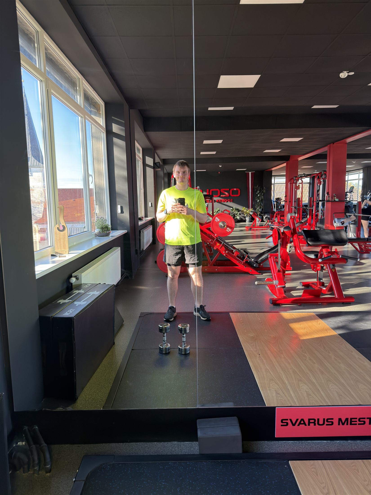
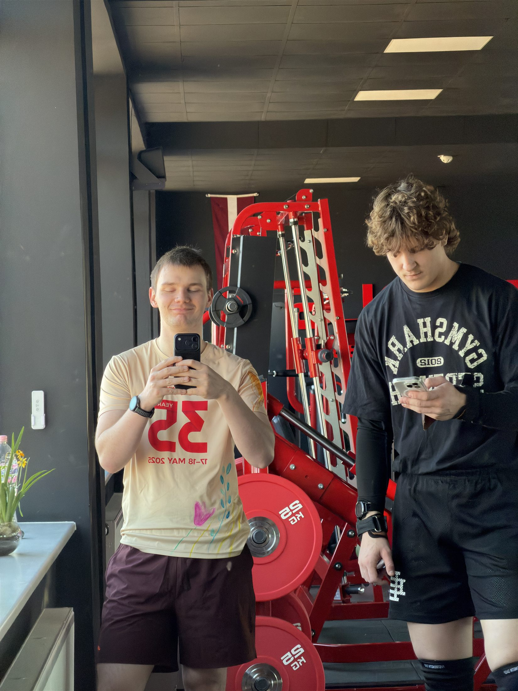
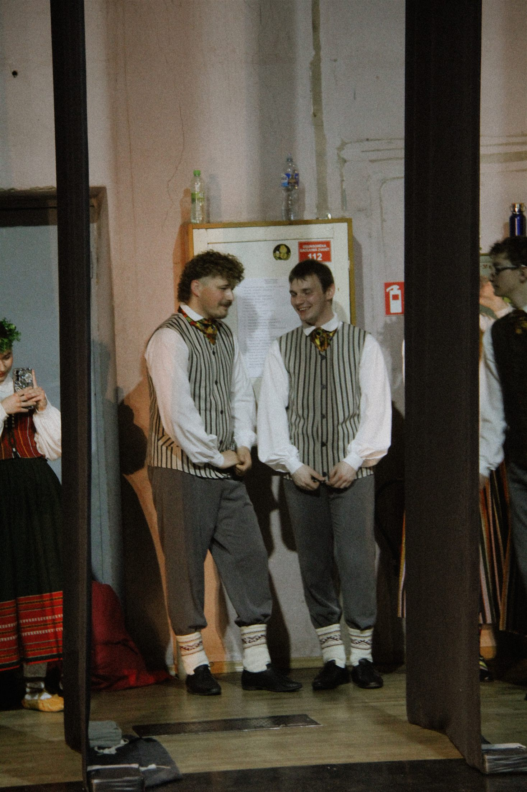

Sākuma sadaļa
Par ieceri
Šī vietne ir sadalīta vairākās lapās, lai sākumā būtu viegli pārskatīt visu nedēļu, bet katras dienas lapā varētu izlasīt pilnu aprakstu. Navigācija ir pieejama katrā lapā.
 Pirmdiena
Pirmdiena
Universitāte un darbs

OtrdienaDarbs un vakara sporta zāle
 Trešdiena
Trešdiena
Pilna darba diena un skolas darbi

CeturtdienaDarbs un vakara treniņš

Piektdiena
Darbs un deju mēģinājumi

SestdienaDeju koncerts
 Svētdiena
Svētdiena
Rimi Rīga Marathon skrējiens un atpūta
Nedēļas secinājums
Šī nedēļa parāda, ka studenta ikdiena nav tikai lekcijas vai darbs. Tā ir līdzsvara meklēšana starp pienākumiem, fiziskām aktivitātēm, radošām nodarbēm un atpūtu. Lai nedēļa izdotos, svarīgi ir plānot laiku, saglabāt enerģiju un atrast brīžus arī tam, kas dod prieku.